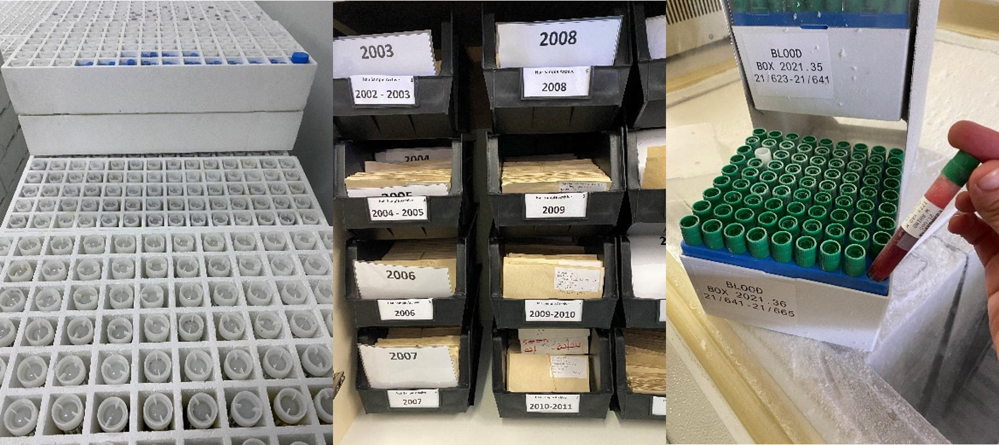

What are biodiversity biobanks?
Biodiversity biobanks, genetic resource banks, genetic repositories or genebanks can be described as scientific collections of different types of preserved biomaterials from biological organisms including tissue, DNA, blood, cell cultures, embryos, reproductive material such as seeds, eggs and sperm, and even whole organisms. These collections are usually preserved by freezing or cold storage. Environmental samples such as water or soil are increasingly being collected and stored for analyses of the biological communities in these habitats. For any type of biobank, one of the main qualifying criteria is that the biomaterials and associated data must be preserved and managed according to rigorous scientific standards and protocols to ensure the viability and quality of the material.
Extant and even recently extinct species across the entire tree of life can be represented in biodiversity biobanks, including bacteria, viruses, fungi and protists, as well as plants and animals but materials originating from humans are usually excluded. Biodiversity biobanks can include indigenous, naturally occurring species, exotic species and, in the context of agrobiodiversity, also breeds and varieties of cultivated crops and domesticated livestock.
Biodiversity biobanks are recognised as essential infrastructure that preserves, manages and provides biomaterials representing currently and potentially threatened, useful, and harmful organisms, for research, conservation, sustainable use and biotechnology development. Biodiversity biobanks offer valuable materials that enable comparisons across taxa, regions and time, and they help to preserve biological material from species, populations, or strains that are rare, declining, or even extinct in the wild. Recent breakthroughs in DNA and RNA sequencing such as High Throughput Sequencing, alongside innovations like DNA barcoding, metabarcoding, whole genome sequencing and metagenomics, have significantly boosted interest in accessing genetic material. If powerful tools like gene editing, cell cloning, and ex situ propagation and reproduction are also considered, it is clear why there is an increase in the demand for access to genetic material. Vouchering of biomaterials from research projects in a recognised biobank allows both verification of data and further investigation.

Biodiversity Biobanks South Africa
The Biodiversity Biobanks South Africa (BBSA) is a network of biobanks that make biomaterials accessible to external researchers, and that agree to work towards the implementation of common, best practice standards and policies. The BBSA is coordinated by SANBI and is funded through the Department of Science, Technology & Innovation (DSTI), with the participating institutions responsible for funding the routine operations of the biobanks. The aim of the BBSA is to increase the range and quality of biomaterials stored and/or distributed, and increase and improve access for research, conservation and socio-economic development. The objectives include promoting the value of biodiversity biobanks; ensuring a credible, legally compliant and ethical system for collecting, storing and providing access to biomaterials by aligning with standards and procedures set by global and national initiatives and structures; strategic expansion of the biobank holdings; increasing the use and impact of the biomaterials by making inventory data accessible; facilitating training and capacity development, and participation in international networks.
There are currently nine institutions (four national science councils, two institutions under a national government department and three universities) participating in the BBSA, collectively with 17 biobanks predominantly focused on indigenous biodiversity and 12 biobanks for crops and livestock and their diseases. These biobanks hold a total of over two million accessions. There are several other biodiversity biobanks in South Africa that are not involved in the BBSA and are associated with individual researchers or units, and there are likely to be vast amounts of biomaterials that have been collected for research projects that are not accessioned into a biobank collection. There is also a substantial quantity of biomaterials originating in South Africa that are held in international biobanks.
| Taxon/category | Type of biomaterial | Institutions | No.of biobanks | Estimated no. of accessions |
|---|---|---|---|---|
| Mammals and Birds | Wide range of tissues, preparations, DNA | SANParks; SANBI; DNSM | 4 | 333500 |
| Reptiles | Tissue, DNA extracts | SANBI | 1 | 16000 |
| Amphibians | Tissue, DNA extracts | SANBI; SAIAB | 2 | 850 |
| Fish | Tissue, DNA extracts | SAIAB; SANParks | 2 | 75000 |
| Invertebrates - terrestrial | Whole specimens | ARC | 1 | 500 |
| Invertebrates - aquatic | Tissue, DNA extracts | SAIAB | 1 | 350 |
| Indigenous plants | Seeds | SANBI/MSB; ARC | 4 | 12620 |
| Indigenous plants | DNA extracts | SANBI/RBG-Kew | 2 | 5400 |
| Fungi | Cultures, DNA extracts | ARC; UP-CMW-IA; UFS-YCC | 3 | 46100 |
| Bacteria | Cultures | UWC-IMBM; ARC | 3 | 6300 |
| Viruses (agriculturally relevant) | Serum, antiserum, plant virus positive samples | ARC-OVR; ARC | 2 | 80000 |
| Livestock genebanks | Blood; reproductive tissues | ARC; DoA-GADI | 3 | 1300000 |
| Crops | Seeds, tissue cultures | ARC; DoA-NPGRC | 5 | 50000 |
| Environmental samples | Soil, sediments, water | ARC; SAIAB; SANBI; UWC-IMBM | 4 | 80 |
Where are the gaps in South Africa’s Biodiversity Biobanks?
The three most obvious gaps in South Africa’s biodiversity biobanks are indigenous plant DNA, invertebrates and environmental samples suitable for eDNA (metabarcoding, metagenomic) analysis. SAIAB, ARC and SANBI have started collecting some eDNA samples, the Plant DNA Biobank at SANBI has been initiated, the ARC has started collecting some terrestrial invertebrate samples, and SAIAB has a number of aquatic invertebrates represented in their biobank. A concerted, strategic effort will be required to ensure that these new biobanks (both infrastructure and holdings) expand at the rate required to allow them to be fully functional within a reasonable timeframe. A full analysis of the sample inventory across biodiversity biobanks is required to assess taxonomic, geographic, temporal and sample type coverage and to use these data to develop a detailed gap analysis to inform an expansion strategy to ensure that the biobanks fully represent South Africa’s biodiversity.
Access to biomaterials for research and development
Increasing demand for biobank materials for research purposes is a trend that has been recognised globally, especially for those institutions that have discoverable sample data. This is a positive trend in that it justifies the existence of the biobank, and facilitates research that benefits biodiversity, human health and economic development. Demand must be managed through sound policies that guide decision-making for the use of samples, and recognise that there can be different categories of use depending on the sample status (threat status of species, number of replicates, embargo for current projects) and categories of users and of types of use.
The Nagoya Protocol on access to genetic resources and fair and equitable sharing of benefits arising from their utilisation is an international agreement adopted under the Convention on Biological Diversity and entered into force on 12 October 2014. The Nagoya Protocol requires that the relevant authority in a signatory country must give Prior Informed Consent (PIC) before genetic resources can be accessed and used, and that there is a Mutually Agreed Terms (MAT) agreement between the provider country and the users on the conditions of access and use of the resources and on the benefits to be shared by the two parties. Benefits can be both monetary and non-monetary, with the latter including joint research, training, and sharing of results. At a national level, the Bioprospecting, Access and Benefit Sharing Regulations (2008, amended in 2015)[@governmentofsouthafrica2015] are relevant for bioprospecting and biotrade but also the collection of samples that may have any use for type of biodiscovery or bioprospecting even if this is in future, and the export of samples from South Africa including for purely academic research. There is also legislation for Threatened and Protected Species, provincial legislation for collecting, sharing and exporting biomaterials and requirements for research involving biomaterials originating from animals or micro-organisms under the Animal Disease Control Act (1984). Microbial culture collections need to be registered with the Department of Trade and Industry in terms of the Non-Proliferation of Weapons of Mass Destruction Act, 1993 (Act no 87 of 1993). This is a complex regulatory environment that places a significant burden on researchers and on biodiversity biobanks.
Conclusion
Biodiversity biobanks are a vital resource in South Africa, given it’s rich biodiversity, the high levels of threats to ecosystems and species, substantial knowledge gaps, and the need to increase economic growth to reduce poverty and unemployment. To ensure that these biobanks contribute effectively to the conservation and sustainable use of the country’s biodiversity they need to be recognised as national assets that require sustained investment. Additionally, those responsible for managing them must be aware of global and national developments in data management and access, adhere to standards for sample management, expand both sample holdings and their user base, and actively participate in relevant national and international networks.
Acknowledgements
This content was compiled by various members of the BBSA.
Agricultural Research Council (ARC) – Riana Jacobs-Venter (National Collection of Fungi), Ahmed Idris Hassen (South African Rhizobium Culture Collection), Puseletso Johnson (Onderstepoort Veterinary Research; OVR)
Department of Agriculture (DoA) – Gretha Snyman (Grootfontein Agricultural Development Institute; GADI), Noluthando Netnou Nkoana & Thabo Tjikane (National Plant Genetic Resource Center; NPGRC)
South African National Biodiversity Institute – Kim Labuschagne (SANBI Wildlife Biobank), Victoria Wilman (SANBI Wildflower Seed Bank), Mudzuli Mavhunga (Plant DNA Biobank)
South African Institute of Aquatic Biodiversity (SAIAB) – Willem Coetzer, Roger Bills, Seshnee Reddy
South African National Parks (SANParks) – Peter Buss, Leana Freese, Tebogo Manamela, Zinhle Manda
University of the Free State (UFS) – Carolina Pohl-Albertyn, Adepemi Ogundeji (Yeast Culture Collection; YCC); UP – Cobus Visagie (Forestry & Agricultural Biotechnology Institute; FABI)
University of the Western Cape (UWC) – Anita Burger, Stephanie Lawrence (Institute for Microbial Biotechnology and Metagenomics; IMBM)
University of KwaZulu-Natal (UKZN) - Michelle Hamer; BBSA Postdoctoral Fellows – Felix Fru, Rekha Sathyan
Recommended citation
BBSA 2025. Biodiversity Biobanks in South Africa: Genetic diversity. National Biodiversity Assessment 2025. South African National Biodiversity Institute. http://nba.sanbi.org.za/.
References
- Government of South Africa 2015. National Environmental Management Act 10 of 2004: Amendments to the regulations on Bioprospecting, Access and Benefit-Sharing notice 447 of 2015.